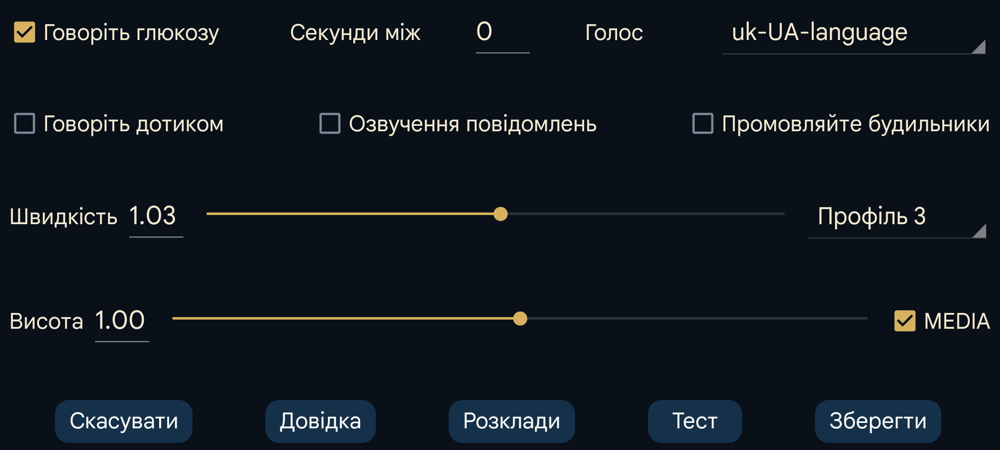

Озвучує значення глюкози після їх надходження.
Секунди між: скільки секунд Juggluco має чекати перед наступним озвученням. Нове значення завжди промовляється одразу після надходження. Якщо встановлено великий інтервал, Juggluco пропускатиме значення, отримані до його завершення.
Голос: вибрати синтезований голос зі списку доступних.
Швидкість: більше число означає швидше розмову.
Висота: більше число означає вищий тон.
Тест: озвучує останнє значення глюкози.
На деяких телефонах для роботи потрібно змінити налаштування синтезу мовлення Android. Іноді слід установити мовні дані або змінити конфігурацію. На телефонах Samsung потрібно вибрати «Синтез мовлення Google» замість «Модуль синтезу мовлення Samsung», щоб мати вибір голосів. Ці параметри можна знайти пошуком синтез мовлення у налаштуваннях Android або за шляхом Мова та введення→Додатково→Синтез мовлення. Тут можна вибрати «Сервіси мовлення від Google» і встановити голосові дані. На інших телефонах параметр розташований у Системні налаштування→Спеціальні можливості→Зір→Налаштування синтезу мовлення.
Коли Говоріть дотиком увімкнено, торкання певних місць запускає мовлення:
торкання поточного значення глюкози;
торкання точок графіків і точок сканування;
торкання введених значень;
торкання верхніх лівого або правого кутів озвучує дату відповідної точки графіка;
тривале натискання пункту меню;
тривале натискання значення у списку: ліве середнє меню→Список.
Читає текстові повідомлення, які тимчасово з’являються на екрані, і результат сканування — помилки та значення глюкози.
Озвучує рівень глюкози під час сигналів низької й високої глюкози — на початку сигналу й у момент його припинення.
Виберіть активний профіль. За замовчув.— початковий профіль. Усі налаштування в лівому меню→Налашт.→Тривоги і в розділі «Озвучення» належать активному профілю.
Можна налаштувати активацію профілю Juggluco в певний час доби.
Гучність озвучення можна збільшити або зменшити в налаштуваннях звуку Android. Коли МЕДІА вимкнено, на телефоні використовується повзунок сповіщень, а на годиннику Wear OS — системний. У режимі «Не турбувати» звук має бути вимкнений. Коли МЕДІА увімкнено, використовується гучність медіа, і на більшості телефонів звук буде чутно під час «Не турбувати».
Промовляйте будильники працює інакше. Сигнали озвучуються в категорії «Тривоги», коли ввімкнено «Сигнал як будильник». На моєму телефоні гучність регулює повзунок будильника, а на годиннику — повзунок сповіщень.